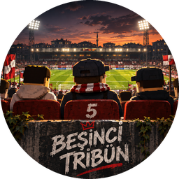

0
/ 10.000 koltuk
0
taraftar · Takip et → koltuğuna otur
⭐
Bul
👕
i
⤢ Kuş bakışı
👕 Taraftarını giydir
Seçimin bu telefonda saklanır. Kamerada koltuğundaki taraftarın anında değişir.
FORMA
SAÇ
AKSESUAR
Tamam
Bu ben değilim
5T sürüm 1
SON GELENLER
Katlar (test) ▾
Stat kuruluyor…